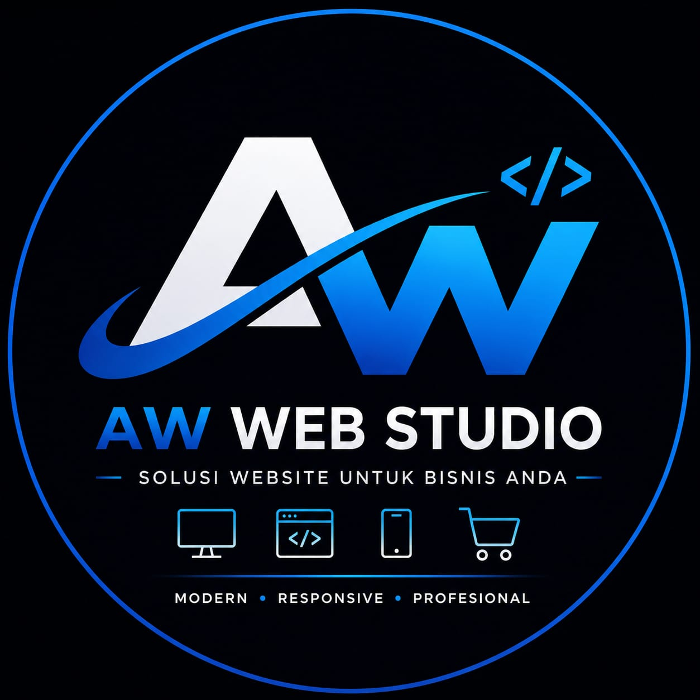

Web Developer • Laravel • MySQL • UMKM Digital
Halo, saya Antonius-wtk, mahasiswa Program Studi Bisnis Digital di Universitas Citra Bangsa (UCB) Kupang.
Saya memiliki minat dalam pengembangan website, desain antarmuka, dan teknologi digital. Melalui AW Web Studio, saya ingin membantu UMKM dan bisnis lokal memiliki website yang modern, profesional, dan mudah digunakan.
Beberapa project yang telah saya kerjakan antara lain website e-commerce AW Store, website jasa Kornelia Jahit, serta project akademik berbasis web dan database.
Tujuan saya adalah membantu pelaku UMKM, toko online, jasa lokal, dan bisnis kecil memiliki identitas digital yang profesional agar lebih mudah dikenal dan dipercaya pelanggan.